UDN
Search public documentation:
UnrealiPhonePackager
日本語訳
中国翻译
한국어
Interested in the Unreal Engine?
Visit the Unreal Technology site.
Looking for jobs and company info?
Check out the Epic games site.
Questions about support via UDN?
Contact the UDN Staff
中国翻译
한국어
Interested in the Unreal Engine?
Visit the Unreal Technology site.
Looking for jobs and company info?
Check out the Epic games site.
Questions about support via UDN?
Contact the UDN Staff
Mobile Home > iOS Provisioning Overview > iPhonePackager Tool
iPhonePackager Tool
Overview
Command Line Interface
- iPhonePackager Command GameName Configuration [ switches ] [ RPCCommand ]
- Where:
- Command - The primary mode of the tool
- GameName - The name of the directory (e.g., UDKGame) for the game being packaged
- Configuration - The build configuration of the game being packaged (e.g., Debug, Release, Shipping)
- [ switches ] - An optional space-separated list of switches that control various aspects of the packaging process (each starts with -).
- [ RPCCommand ] - An optional argument used for some commands (notably rpc and deploy)
- packageapp - Collects and transfers files to package to a remote Mac and generates an application directory, but it does not create an IPA or copy the files back to the PC. This mode requires RPCUtility to be installed on the remote Mac, and is designed to be used with XCode for further debugging on the Mac.
- repackageipa - Collects files to package into an IPA, but does so locally on the PC. This mode requires a stub file to have been previously generated by packageipa. Can be used in conjunction with -sign to code sign the application.
- packageipa - Collects and transfers files to package to a remote Mac and generates an IPA, which is transferred back. Requires RPCUtility to be installed on the remote Mac. Can be used in conjunction with -createstub to make a stub for later use with repackageipa (packageipa -createstub is the default mode used by compiling UE3.sln for iPhone targets).
- install - Deploys a previously created IPA to all connected iOS devices on the local machine. Requires iTunes to be installed. The IPA name is either automatically chosen based on <GameName> and <Configuration>, or it uses an explicit filename if passed on the command line as an extra argument (e.g., "iPhonePackager deploy UDKGame Release C:\foo.ipa" will install C:\foo.ipa instead of <installpath>\Binaries\IPhone\Release-iphoneos\UDKGame\UDKGame.ipa).
- resigntool - Launches the resign tool directly
- certrequest - Launches the certificate request generator tool directly
- gui - Brings up the configuration wizard / tools list. See Unreal iOS Configuration Wizard.
- -interactive - When used along with -sign, the configuration wizard will appear if all three configuration criteria aren't met:
- Mobile provision present in <InstallPath>\<GameName>\Build\IPhone
- Matching signing certificate installed
- PList overrides present in <InstallPath>\<GameName>\Build\IPhone\<GameName>Overrides.plist
The configuration wizard offers a friendly way to provide these files, or generate a CSR request to get the provision and certificate from Apple.
- -verbose
- Enables more verbose output, listing every individual file considered for packaging, etc...
- -network
- Used to specify that the packaged IPA will be used with network file loading (incompatible with -distribution).
- -compress=best
- -compress=fast
- -compress=none
- Controls how much effort is put into compressing is used when creating the IPA. During development, -compress=none results in the fastest iteration times, saving compression time on the PC and decompression time on the iOS device. Use -compress=best when preparing for App Store submission to get a better feel for submission size.
- -distribution
- Used when doing builds for distribution to the App store. Controls the selection of signing identitiy, and the name of the output IPA (Distro_GameName.ipa).
- -sign
- Perform code signing during packaging on PC. When doing packaging on a remote Mac, code signing is always performed.
- -strip
- Controls whether or not the executable will be stripped of symbols. Only heeded when doing a remote packaging operation on a Mac.
- -createstub
- Controls whether a remote packaging operation on a Mac will package all content, or just essential content, and the name of the returned .ipa on the PC (.ipa or .stub). This option is incompatible with -distribution.
Unreal iOS Configuration Wizard
Accessing Unreal iOS Configuration Wizard
The Unreal iOS Configuration wizard can be launched from in the editor, the start menu or from Unreal Frontend. 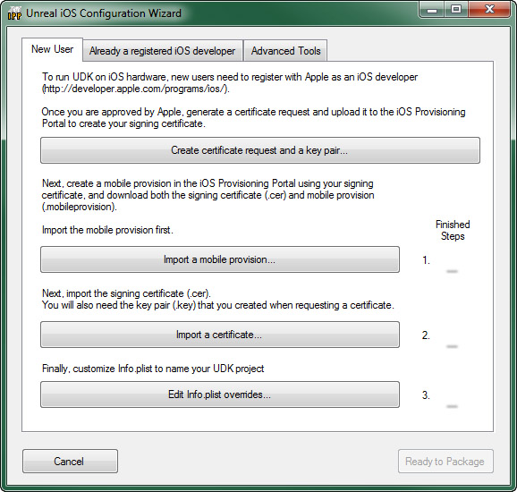 It will auto launch the first time you go to deploy to your iOS device, after that you will need to manually launch it if you want to change the data in it.Launching from in Editor
If the steps to configure iOS provisioning yet, the Unreal iOS Configuration wizard will be launched when you click the Start this Level on iPhone button in the toolbar. 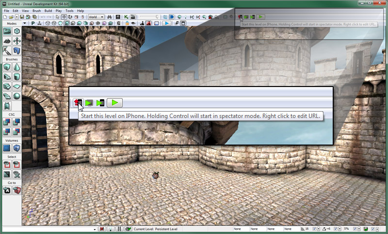 A few console windows will appear first and then the configuration wizard will appear.Launching from the start menu
The Unreal iOS Configuration wizard can be launched at any time for the shortcut located in the Start menu in Windows. It can be found underUnreal Development Kit > [Your UDK Version] > Tools.
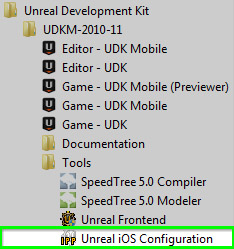
Clicking this shortcut will open the configuration tool allowing you to initially configure your iOS provisioning or to update it should it be necessary during development.
Launching From UFE
The Unreal iOS Configuration wizard can be launched directly from within the Unreal Frontend application by clicking the button. 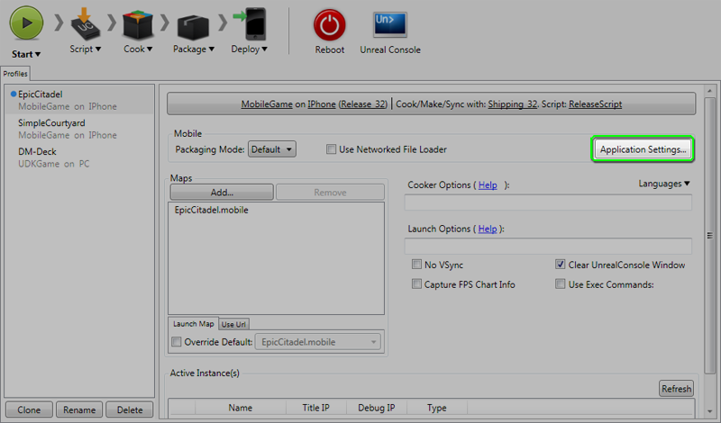 Clicking this button will open the configuration tool allowing you to initially configure your iOS provisioning or to update it should it be necessary during development.Configuration Wizard Interface
The Unreal iOS Configuration Wizard interface consists of a collection of tabs, each containing specialized functionality for different parts of the provisioning and deployment process. The interface also contains two buttons that are always available:| Button | Description |
|---|---|
| Closes the configuration wizard, without continuing the packaging process if it was in progress. | |
| Closes the configuration wizard and continues the packaging process if it was in progress. |
New User Tab
The New User tab contains tools for developers who have not developed iOS applications previously. 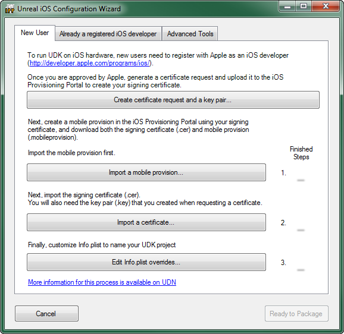| Button | Description |
|---|---|
| Opens the Generate Certificate Request Window. | |
| Imports a provisioning profile downloaded from Apple's Developer website. | |
| Imports a development certificate and key pair downloaded from Apple's Developer website. | |
| Opens the Edit Info.plist Window. |
Already a Registered iOS Developer Tab
The Already a Registered iOS Developer tab contains tools for developers who have previously developed iOS applications, either using Unreal or through other methods, and already have a development certificate and provisioning profile. 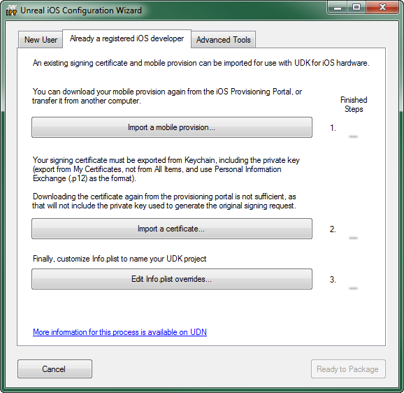| Button | Description |
|---|---|
| Imports a provisioning profile downloaded from Apple's Developer website. | |
| Imports a development certificate and key pair previously downloaded from Apple's Developer website or a .p12 file exported from Keychain Access. | |
| Opens the Edit Info.plist Window. |
Advanced Tools Tab
The Advanced Tools tab contains tools for signing, installing, and deploying IPAs. 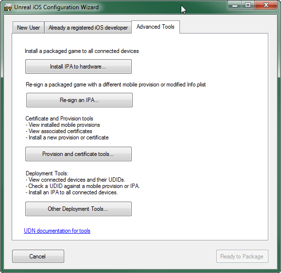| Button | Description |
|---|---|
| Installs a packaged game (IPA) to all connected iOS devices. | |
| Opens the Re-signing Tool Tab of the Signing Tool. | |
| Opens the Provisions and Certs Tab of the Signing Tool. | |
| Opens the Deployment Tools Tab of the Signing Tool. |
Tool Windows
Generate Certificate Request Window
The Generate Certificate Request window generates a key pair for signing your iOS applications and a certificate request that is used to generate a certificate on Apple's Developer website. 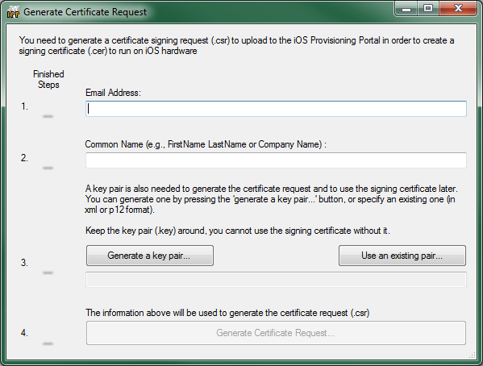| Step | Description |
|---|---|
| Email Address | The email address associated with your Apple iOS Developer account. |
| Common Name | The name to be associated with the certificate. |
| |
|
| Generates the certificate request file (.csr) to be uploaded to Apple's Developer site to create the development certificate. |
Customize Info.plist Window
The Customize Info.plist window is used to edit the contents of the Info.plist file. 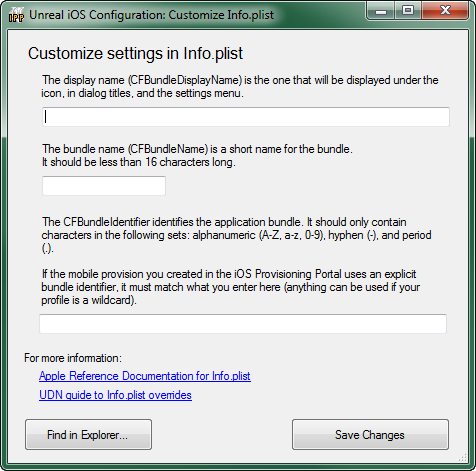| Field | Description |
|---|---|
| Bundle Display Name | This is the name that will be displayed on the iOS device directly under the app's icon on the home screen. You want to make sure this is a compact name so that it will fit within the allotted space without being cut off. (Example: UDN iOS Game) |
| Bundle Name | This is a condensed name used to identify the app. This should be less than 16 characters. (Example: UDNiOSGame) |
| Bundle Identifier | This should match the bundle identifier of the App ID created on Apple's Developer website previously. (Example: com.EpicGames.UDNiOSGame) |
| Button | Description |
|---|---|
| 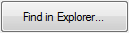 | Opens a file explorer showing the Info.plist file so it can be opened and manually edited. |
| Saves the information in the above fields to the Info.plist file. |
Signing Tool
The signing tool is a collection of tabs, each with specialized functionality. These tabs and their functions are explained below.Re-Signing Tool
The Re-signing Tool tab provides the ability to quickly and easily modify the provisioning profile, certificate, or Info.plist of a particular packaged game (IPA file). 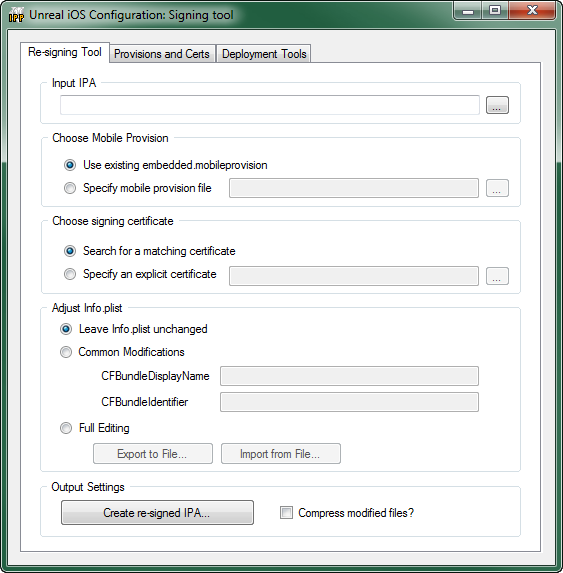 Input IPA- Set the input packaged game file to re-sign.
- Use existing embedded.mobileprovision - Does not modify the provision profile associated with the IPA.
- Specify mobile provision file - Set the provision profile to replace the current provisioning profile with.
- Search for a matching certificate - Search for an installed certificate that matches the certificate the IPA has been signed with and use that for re-signing the IPA.
- Specify an explicit certificate - Set the certificate to replace the current certificate with.
- Leave Info.plist unchanged - Performs no modifications to the current Info.plist of the IPA.
- Common Modifications - Allows the most common aspects of the Info.plist to be replaced.
- CFBundleDisplayName - Sets the string to use to replace the current bundle display name.
- CFBundleIdentifier - Sets the string to use to replace the current bundle identifier
- Full Editing - Allows the Info.plist of the IPA to be exported, manually edited, and re-imported.
Button Description Exports the current Info.plist of the IPA to a file so it can be edited manually. Imports an Info.plist file to replace the current Info.plist of the IPA
- Compress Modified files? - If checked, the modified files will be compressed.
| Button | Description |
|---|---|
| Creates the re-signed IPA using the input IPA and performing the specified adjustments. |
Provisions and Certs
The Provisions and Certs tab displays the provisioning profiles and certificates currently installed and imports additional provisioning profiles and certificates. 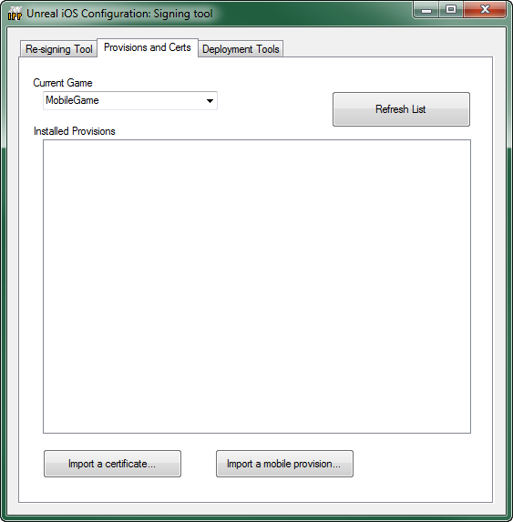| Button | Description |
|---|---|
| Refreshes the Installed Provisions list. New installed provisions and certificates are not displayed until the list is refreshed. | |
| Imports and installs a new certificate. | |
| 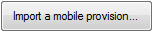 | Imports and installs a new provisioning profile. |
Deployment Tools
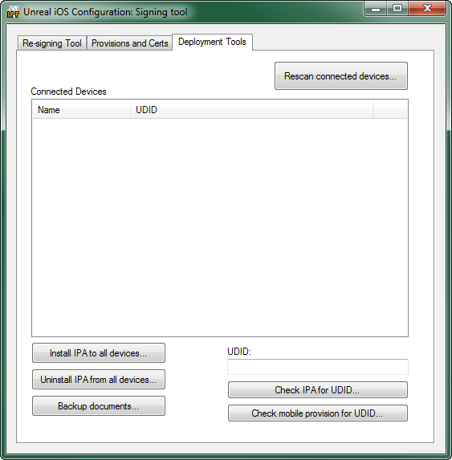| Button | Description |
|---|---|
| 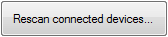 | Rescans for connected iOS devices and repopulates the Connected Devfices list. |
| Installs an IPA to all connected devices. If the application is already running on the device, it will be terminated before installation completes. However, installation will proceed faster if the device is idle (no 3D applications running, etc...). | |
| Uninstalls an IPA from all connected devices. | |
This command back up all files in the Documents directory to [install path]\[GameName]\iOS_Backups\[DeviceName], where:
| |
| Checks to see if the device ID entered is associated with an IPA. | |
| Checks to see if the device ID entered is associated with a mobile provision. |
- Open IPP.exe in
/binaries/iPhone/ - In the Deployment Tools tab, select the device and click Backup Documents
- Navigate to the IPA that you used on device. For example, if you cooked Release UDKGame, the IPA would be:
\Binaries\IPhone\Release-iphoneos\UDKGame\UDKGame.ipa. - The files will be saved to
\UnrealEngine3\UDKGame\iOS_Backups\ - You can then open up any profiling files via the associated application, such as GameplayProfiler.exe.